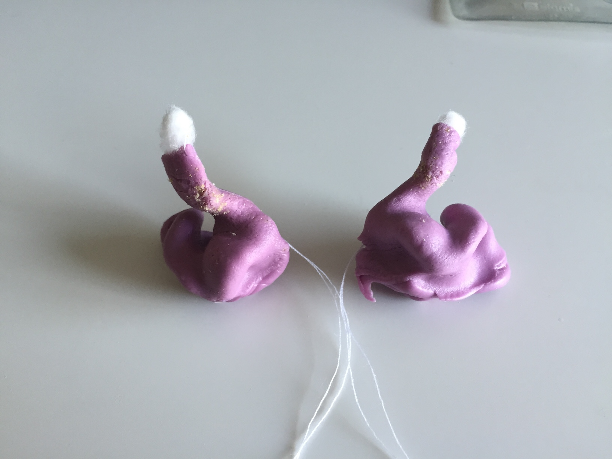
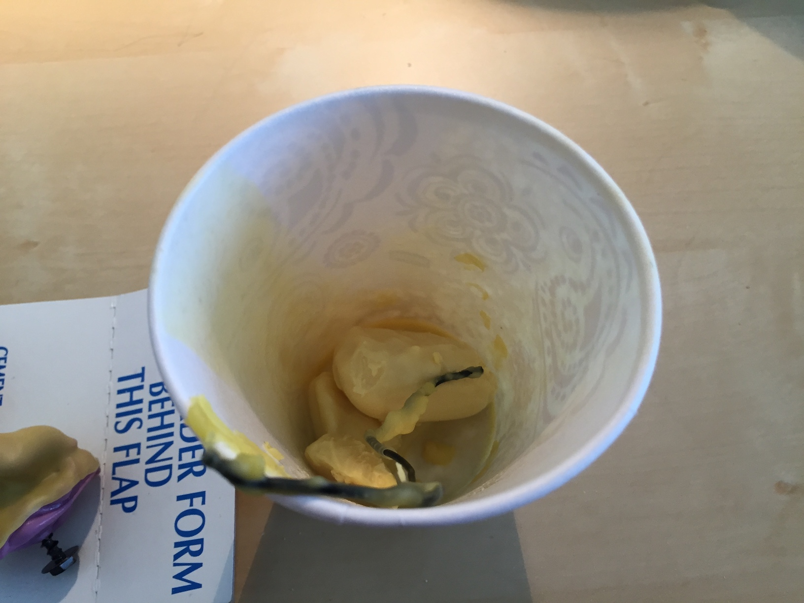
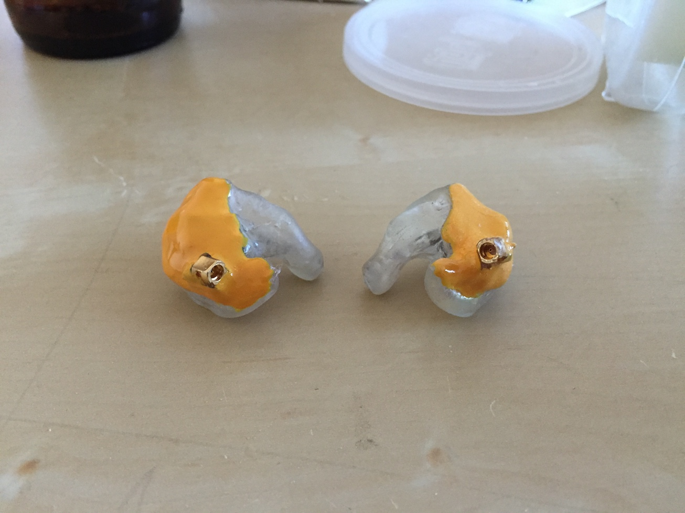

DIY Custom IEMs, v1
1. Introduction
Custom IEMs are the muscle cars of the musician and audiophile world; powerful and functional, yet highly varied and customizable. Typically made of acrylic or silicone, they are molded to a listener's ear to provide a complete and comfortable seal that has unparalleled noise attenuation. They are fitted with drivers (often multiple per ear) specifically tuned to create a specific sound signature based on one's needs and tastes. And like muscle cars, they are highly priced - often in the range of $500 or more per pair.

During the summer of 2015, I chanced upon an interesting thread on Head-Fi. An increasingly larger group of Head-Fi users had started and continued a thread about manufacturing custom IEMs at home using some components and materials that could be easily bought online. Needless to say, I was very intrigued.
After reading the entirety of the Head-Fi thread and taking notes on what worked and what did not, I went ahead and bought materials and tools for embarking on this endeavor.
The general idea was to take silicone impressions of my ear canals, create a transparent negative mold out of gelatin, use the negative mold to cast a positive shell using UV-cured acrylic, then populate the shell with the drivers and electronics for the IEM. Simple enough, right?
1. Shell Production
First things first, I had to get impressions taken of my ears.
These impressions cost $40 for the pair at a local audiologist's office. There are kits and tutorials to doing this at home, DIY style, but I didn't feel the risk of ripping out an eardrum or two was worth the ~$15 it would save.
As the impressions are made out of a silicone rubber, they have a rough and grippy texture. If we created a mold out of the impressions as-is, they would transfer the rough and grippy texture to the acrylic cast, which would then irritate the hell out of my ears. The solution was to dip the impressions in wax to smooth them out and also add a bit of thickness to help with the seal between the CIEM and the ear canal.
I bought several blocks of beeswax and got to work trying to melt them. This proved somewhat difficult because I didn't have the kitchen equipment to set up a double-boiler.


I ended up taking the beeswax, placing them in a double-walled metal cup and using my desktop halogen lamp to melt the beeswax.

After dipping the impression in the beeswax, we have some very smooth impressions ready for casting molds!

I mixed up some Knox gelatin (1/2 cup hot water + 2.5 tbsp glycerin + 2 packets gelatin) and poured it into paper cups, and used some helping hands to hold the impressions in the gelatin, ear canal pointing down.

After a day in the refrigerator, the gelatin set and the transparent molds are complete!

Remove the impressions carefully and then...

Remove the molds from the paper cups! You can see the outline of the impressions from the side.

The next step is to cast an earphone shell from the mold. This will be done by pouring a UV-curable resin into the mold and covering the top of the mold, then curing the resin from the sides of the mold using a UV chamber. The excess resin is then poured out of the top of the mold, which was covered earlier. I experimented with different cure times to create different shell thicknesses.

The resin that I used was Gelaze Top Coat - used for fingernail polish. Cheap and easily obtainable at my local nail salon supply store.

My UV chamber is a nail gel curing unit with a 9W bulb. It's relatively weak - thus, it takes 10-20 minutes to cure the resin to a reasonable thickness.

Curing the resin in the open air creates a tacky surface layer that needs to be removed. Dunking the cast into a glycerin bath for a second round of curing in the UV chamber tends to remove or cure the tacky surface layer into a nicely clean and glossy layer.

My first earphone shells are complete!

The biggest problem with the first set of shells was that they were way too big. The wax layer built up the shell so much that it no longer fit in my ear canal. Oh well - there's a lot of gelatin, so I made another set of molds without the wax coating on the impressions.


Note that because of the porous nature of the silicone impressions, there were a ton of bubbles in the mold.


You can see how the bubbles affect the end product - lots of little bumps and nodules (painful bumps and nodules, I might add) on the shell.

After a fair bit of sanding, we finally get something that I can put into my ear without causing worlds of pain.

A perfect fit!


A perfect pair!

I decided to try another UV nail gel resin that I bought off of eBay. This resin stunk a lot more than the Gelaze and was a lot less consistent in quality - some was runny and some was gummy and in general, was really hard to work with.
The next thing to try was to coat the shells in UV nail gel resin to create a smoother shell. These shells were the ones to come out of that:


Beautiful.
2. Electronics
With the shells made, the final steps are to add drivers and electronics into the shell and add acoustic tubing and dampers to tune their sound output.
The drivers themselves are manufactured by Knowles, who provide detailed specification sheets about the frequency response of the drivers. These frequency response charts can be used in conjunction with various low/high-pass filters and dampers (small tubes with various baffles to adjust the frequency response) to create a desired sound between multiple drivers.
The specific drivers I decided to go with for this IEM was a Knowles GK-31732 with an additional Knowles CI-22955 driver attached to it. The GK driver is a packaged triple driver - it uses a CI-22955 (woofer) with a dual-driver TWFK-30017 (tweeter) attached to a proprietary crossover circuit for easy drop-in to any earphone application. I wanted a bit more bass impact so I opted to add another CI driver into the crossover circuit in parallel with the existing CI driver. It should lower the combined impedance of the CI drivers and thus increase the current through the two woofers, creating more bass presence.
The CI driver is technically a full-range driver (meaning it can output with decent clarity at most audible frequencies). Since we're using it as a woofer, we will use a damper to muffle higher frequencies, leaving the bass frequencies untouched. There are multiple other methods to create a low-pass filter, including electronic crossovers or using very long and narrow acoustic tubing.

In this image, you can see the CI drivers on the side with two GK drivers in the middle.

Finger for scale.

The first step is to solder the CI driver to the GK driver's CI driver.

Then solder an MMCX connector to the GK driver so I can connect my Shure IEM cables.

Now to deal with the acoustic tubing.

The nozzles of the GK driver are incredibly close together - too close to allow two pieces of tubing for each nozzle. So why not use one?

Seems to work okay.

Now to work the tubing from the additional CI driver into the GK tubing. I created this splice by slicing open a hole in one tubing and gluing another piece of tubing onto the hole.

Then stick a damper into the spliced tubing.

Seems to work! The CI sits nicely beside the GK.

Time for an in-ear test. Sounds ok! Definitely can be improved as the bass is a bit bloomy.

Now we throw everything into the shells we made earlier.

So beautiful.

Now to seal off the shell. The electronics stick a little beyond the plane of the shell, so what I did was use plastic wrap to seal the electronics to the shell and create a plastic layer that I coated with additional UV nail gel to create a fully custom-formed shell. I used this formed shell as the lid.

Worked like a charm!
With a bit of paint, these custom earphones are ready!